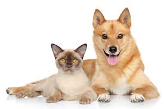

Quienes Somos
Somos una entidad sin ánimo de lucro que se dedica a brindar bienestar, estabilidad, y protección a perros y gatos que han sido abandonados por sus amos o que se encuentran en estado de maltrato.
Historia
Patitas de Corazón se formó con el fin de poder rescatar, rehabilitar y luego dar en adopción aquellos perros, gatos abandonados o maltratados.